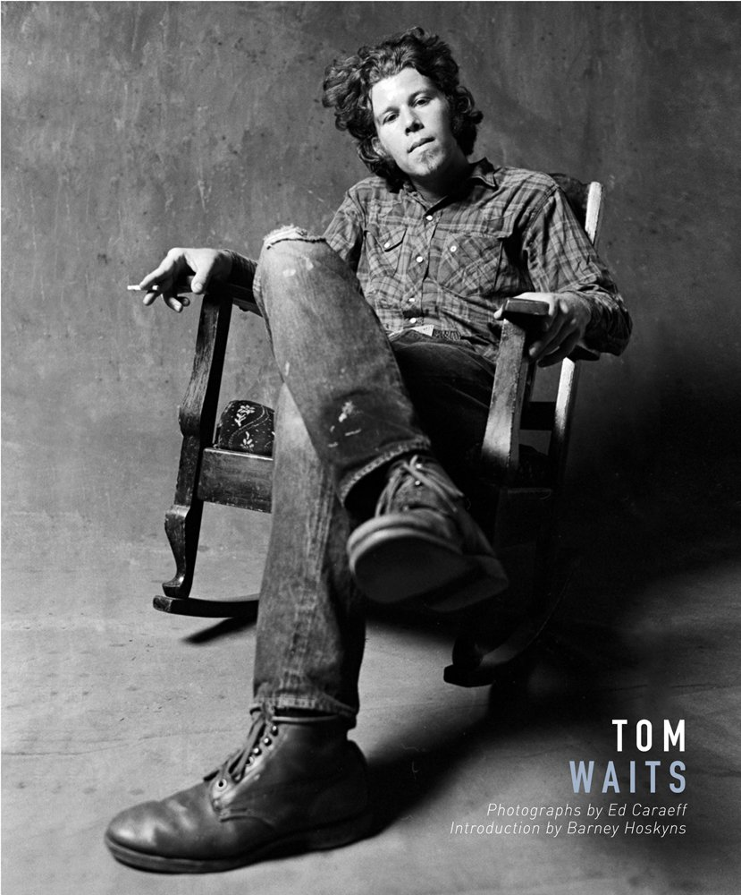

Jefferson Airplane was an American rock band based in San Francisco, California, that became one of the pioneering bands of psychedelic rock. Formed in 1965, the group defined the San Francisco Sound and was the first from the Bay Area to achieve international commercial success
Tom Waits
